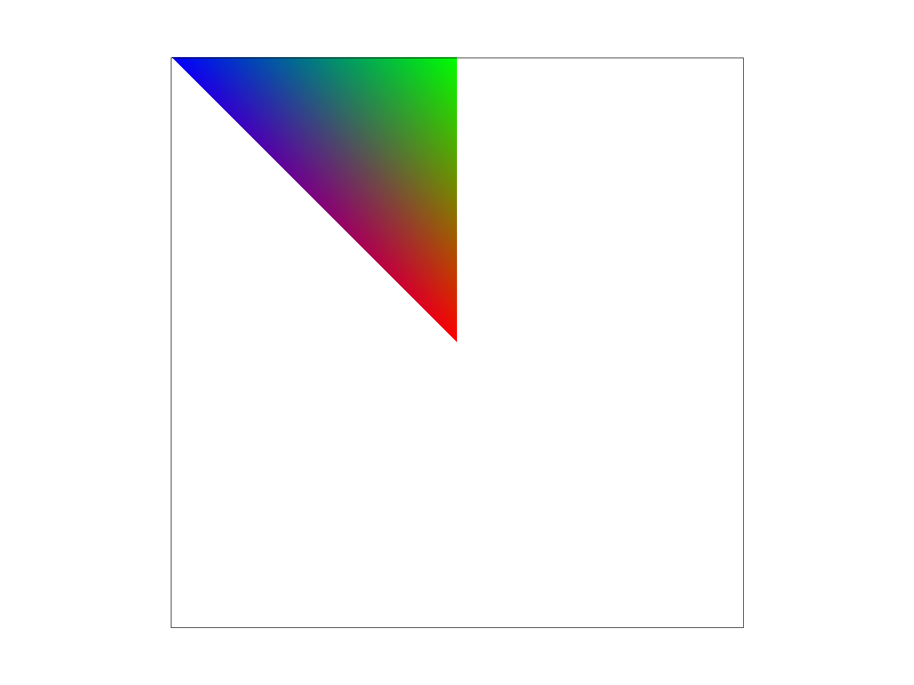

CS184/284A Spring 2025 Homework 1 Write-Up
Names: Gabriel Raulet
Link to webpage:
https://cal-cs184-student.github.io/hw-webpages-gabeh98_team/hw1/index.html
Link to GitHub repository:
https://github.com/cal-cs184-student/sp25-hw1-gabeh98
Task 1: Drawing Single-Color Triangles
To rasterize a triangle, we are given three 2D points and a color, and the corresponding pixels on the frame buffer are to be filled with this color. We
start by calculating the bounding box of the triangle, which is the the smallest rectangle that contains the entire triangle. We then iterate over every
pixel in the bounding box and check whether the pixel is inside the given triangle. We do this by checking whether the pixel is inside the intersection
of the three half-planes defined by the three edges of the triangle. It is also important that we make sure the three points are in the correct winding
order, otherwise our line tests will be inconsistent. To get the points ordered counterclockwise, we compute the cross product of the second and third
points, using the first point as the reference origin. If this value is positive, we swap the first two points. We are then guaranteed to be in the
correct winding order.
Task 2: Antialiasing by Supersampling
To implement supersampling, I took the following approach. I maintained the regular grid boundaries but split the sample_buffer array into
sample_rate different sections, each corresponding to a supersample. Each pixel is divided up into a
rate-by-
rate grid, where
rate is the square root of the sample rate. We then test each "sub-pixel" using the triangle tests implemented in the previous task,
and finish by taking the average RGB values of all the supersamples when we downsample (or resolve) to the framebuffer. The following three
images show what happens as we increase the sampling rate. A larger sampling rate will mean there is higher resolution in the supersample buffer,
and therefore the resolved framebuffer pixels will be approximates of this higher resolution supersample buffer. Even though the number of pixels
in the frame buffer remains the same, the higher resolution in the supersample buffer gives a more realistic looking result (high-frequency changes
are minimized.)
|
Sample rate = 1
|
Sample rate = 4
|
Sample rate = 16
|
Task 3: Transforms
Nothing fancy here. Just a cubeman bending his knees a little bit.
|
Cubeman bending his knees
|
Task 4: Barycentric coordinates
I think of barycentric coordinates as being a simple interpolation between all three points of a triangle. One way to think about it is
to keep one of the coordinates A fixed at 0 and imagine what happens as we change the other two coordinates B and C. We have to keep B and
summing to 1, so we are essentially interpolating between the two points coresponding to said coordinates. Now consider that we have
drawn a line between A (the one whose coordinate has been fixed to zero) and the interpolated point between B and C. If we maintain the
ratio of the coordinates B and C constant, then increasing A interpolates between the point corresponding to A and the interpolated point between
B and C. We are in a sense, interpolating between one point of the triangle and an interpolated point on the opposite edge of the triangle.
In the image below, suppose that the blue area corresponds to point A. Interpolating between green and red gives us some point on the edge the
right side. Interpolating between A and this point on the right edge gives an interpolation between pure blue and som green-red mixture. The
same applies to all points and all opposing edges.
|

Triangle showing barycentric coordinate interpolation of RGB colors
|
Task 5: "Pixel sampling" for texture mapping
In order to perform pixel sampling, we are given the uv coordinates of the texture which correspond to our triangle. We use barycentric coordinate
mapping to determine where each pixel corresponding to some location of the triangle, maps to the image. We then sample the image texture at that
location and get its color value. Essentially we are treating the red, green, and blue corners of the triangle from the last task as the corners
of the passed u-v coordinates. For nearest pixel sampling, we do the most obvious thing: find the nearest pixel in the texture to the mapped location.
For bilinear sampling, we take the 4 texture samples that most surround the sampling location and interpolate the colors based on the interpolated
location within those 4 pixels. Bilinear sampling is most obviously better than nearest sampling in my given example at locations with thin
oblique streaks. These areas have high frequency changes between colors and therefore benefit from the interpolation provided by bilinear sampling.
|
Nearest sampling (Sample Rate=1)
|
Nearest sampling (Sample Rate=16)
|
|
Bilinear sampling (Sample Rate=1)
|
Bilinear sampling (Sample Rate=16)
|
Task 6: "Level Sampling" with mipmaps for texture mapping
Level sampling is a technique useful for keeping the ratio of texel sizes and pixel sizes relatively stable. We select a higher
mip level (lower resolution) when we are displaying a texture with higher resolution than the triangle we are sampling, and vice versa.
Level sampling slightly increases memory usage by requiring storage of the different mipmap levels, but it is not too much space.
|
(L_ZERO, P_NEAREST)
|
(L_ZERO, P_LINEAR)
|
 (L_NEAREST, P_LINEAR)
(L_NEAREST, P_LINEAR)
|
(L_NEAREST, P_NEAREST)
|